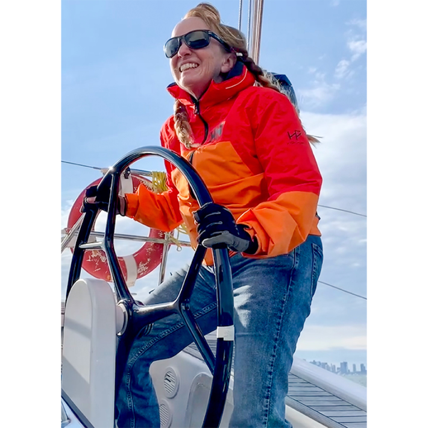
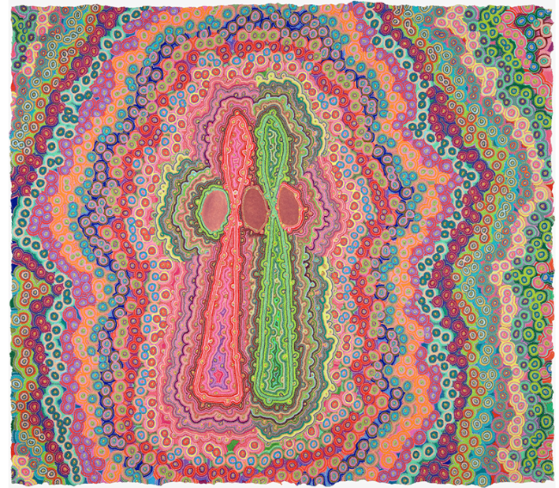

It’s 0400 hours on a Wednesday in November, and it’s dark. The puny crescent moon set hours ago. Huge, black clouds obscure the stars. Will they bring us driving rain? Gale-force winds? Lightning? Ship-killing waves?
Who knows.
I’m finishing the overnight watch on the 47-foot sailing vessel Eos, and our crew of four is approaching the Gulf Stream, the powerful ocean current that flows northeast from the Gulf of Mexico and across the North Atlantic Ocean to Europe.
Out here, at the nexus of warming oceans and climate change, weather contradicts forecasts, especially at peak hurricane season. Atmospheric phenomena 1,000 miles away can dictate what happens to your ship—and to you. Sailors, far more connected to land than ever by technology, can now call on science to keep their vessel and crew safe. Modern sailboats are loaded with maritime technology that is intended to mitigate the challenges that used to make offshore passages so daunting: isolation from shore and difficulty predicting the weather.
Warming seas cause more frequent and intense storms, creating even more unpredictable weather patterns.
Out here, though, you still need to rely on old instincts. And tonight, since I am alone in the cockpit, it is my job to figure out how to respond to the weather and protect Eos and her crew of four.
On the ocean, when weather changes suddenly and violently, I experience it firsthand: in my stomach, in the bruises, scrapes, and burns I’ll get when the rocking of the boat throws me into a wooden table or a metal winch, or onto the burner where I’m attempting to cook dinner for our crew.
But now, Jules Miller, captain of Eos, is replacing me on watch, and she is happy. A 62-year-old with a quick smile, a quicker laugh, and an encyclopedic knowledge of sailing, Miller has taken the job of captaining Eos from the boat’s summer berth in the Chesapeake Bay to a warm weather port in the Caribbean island of Antigua, where her owner can pick it up in the winter. This passage entails hundreds of miles of open ocean on the western North Atlantic, where the northerly gales of November and the confused seas of the Gulf Stream can contrive to make even the saltiest ocean sailor turn back.

SAILOR'S DELIGHT: Captain Jules Miller happily takes on challenging sailing routes—with help from the latest in modeling of complex weather systems at sea. Photo by Ernest Khirallah.
This is no big deal for Miller, who has circumnavigated the globe since walking away from a career as an artist to dedicate herself to sailing oceans. “My whole world was making tiny circles; then I made a big circle in a small boat around the whole world,” is how she puts it, punctuating the quip with her trademark laugh. She expects that the voyage will take about 11 more days.
And as we left the Chesapeake the day before, Miller got a very upbeat forecast from the service she uses to plot her route for the fastest passage that best avoids inclement weather and unpleasant seas. This is why she is so cheered when she comes up on deck two hours before dawn to replace me on watch. “As long as it’s right,” she says with her rapid-fire laugh.
It won’t stay right for long. Although cutting-edge equipment and modern weather-forecasting services have made it easier than ever to know what awaits a small boat entering the ocean, a mariner still can’t be sure what is going to happen. Further complicating matters is that warming seas cause more frequent and intense storms, altering ocean currents, and creating even more unpredictable weather patterns.
And as we head into the Gulf Stream, we’re about to experience some of them.
Predicting the weather at sea is different than on land. Tiny changes in currents or winds or the temperature of the water that are impossible to predict from weather stations located on land or on buoys hundreds of miles away can have an immediate and violent impact on the conditions in a specific place at a specific time. Imagine if, to set out on a cross-country road trip, a driver needed to steer clear not just of storms, but also of roads that would suddenly turn up full of boulders without warning.
For centuries, sailors have relied on their weather eye, a paper chart, a barometer, and age-old wisdom. We’ve all heard “red skies at night, a sailor’s delight; red skies in the morning, sailor take warning.” And it’s more or less true, in mid-latitude regions, where storms generally move from west to east. A red sky in the evening indicates that a low-pressure system is departing the area, and a high-pressure system is arriving and stable air is coming in from the west. A red sunrise indicates that a low-pressure storm system is moving in from the west.
Weather prediction at sea, however, has advanced far beyond adages and rhymes. No longer limited either to crackly single-sideband radio calls to forecasters on land or other vessels at sea for information about the weather, mariners now have their pick of a variety of weather-routing apps that analyze information from a variety of weather forecast models in real time, connected by high-speed satellite internet.
No one wants to face 35-knot gusts and nine-foot chop at six-second intervals in a 47-foot sailboat.
Miller often uses one called PredictWind, which will create six routes, each based on a different forecast model, centered on the mariner’s time and point of departure, and desired destination. The interface shows how conditions might change depending on the route: Not just the speed and direction of the wind, but also how it will likely change over time at any given location. As well as the height of the waves—and what kind of waves: steep, choppy ones; long, slow rollers; or waves of different sizes and characters coming from different directions. If all six routes follow the same path, and the conditions along that path are favorable, the logic goes, then the mariner can be fairly confident that the passage will go well.
But even as software gets better at telling mariners what to expect, it also takes someone with expertise and experience to really understand what's going on out there. On Eos, Miller takes advantage of an additional service provided by a meteorologist named Chris Parker, who advises mariners on the most advantageous routes to take to make use of favorable conditions and avoid storms, rough seas, headwinds, and doldrums. Parker, who is also an avid sailor, analyzes hundreds of factors that take into account weaker systems and atmospheric phenomena the apps cannot see. “Computer models do better with larger, stronger features, which have more data points,” he says.
All models start by approximating the current state of the atmosphere using observations from buoys, ships at sea, land-based observations, weather balloons, satellites, airplanes, and airports. Then they perform calculations, using some of the fastest supercomputers on Earth, to predict the state of the atmosphere, the surface of the land, and the surface of the sea in the future.
Even the best supercomputers, however, cannot predict many weather phenomena, especially thunderstorms, tornadoes, and other severe weather.
Instead of providing a forecast, or several forecasts, about what will happen along a route, Parker creates an ensemble of forecasts that give an indication of the range of possible future states of the atmosphere—and how that might affect conditions where a mariner will be at a given time. Then, he brings to bear what he calls his “gut feeling and years of experience about what happens typically in weather systems like that.”
It’s Thursday, 1630 hours, and I’m trying to make dinner so we can eat before it gets dark. Three of the four people on board have lots of experience on the high seas—Miller co-captained a 41-foot boat around the world; Jason Jernigan circumnavigated on his 30-foot boat solo, and I’ve sailed 15,000 offshore miles and crossed two oceans. Our fourth crew member, João Geada, is on his second long ocean passage. But I’m the only one of us who’s at ease cooking on the high seas, and everyone appreciates a hot meal on a boat in the North Atlantic. Though the water temperature is warming into the 70s as we head east, the air is still chilly, and everyone is bundled in foul weather gear.
Eos is making her way across the roiled waters of the Gulf Stream in long, slow, side to side rolls, a very safe and comfortable motion when you’re seated in the cockpit. When you’re trying to stay upright belowdecks at the stove, not so much. I don’t get seasick, but “just in case,” I’ve gratefully accepted a scopolamine patch from Geada. I’ve decided to whip up something quick so I don’t have to stay below for long: five-cheese tortelloni with a simple butter-garlic-basil sauce. It’s a terrible idea. As the boat rolls, the two hot pots want to slide off the stove, so I have to hold both with one hand while I add ingredients. Some of the rolls catch me off guard, and I burn my hand. Then the tortelloni go flying. I bump my head as I reach down to pick them up. Five second rule. I carefully pass the hot pot up the ladder to the cockpit and we eat.
Meanwhile, Eos is taking advantage of a three-knot current, and we’re making excellent time, on pace for a 170-mile day. That should allow us to easily make the waypoint—a specific location along a route—that Parker has advised, which will put us just off Bermuda, the closest port, in two days, and on track to reach our destination of Antigua on schedule.

SHIFTING PATTERNS: Before circumnavigating the globe as a sailboat captain, Miller made her career as an artist. “My whole world was making tiny circles," she says. "Then I made a big circle in a small boat around the whole world.” Illustration by Julie Miller.
We make it to Parker’s Thursday evening waypoint at 1800 hours. We’re out of the Gulf Stream now; however, the situation has changed for the worse. Weather forecasts can change quickly on the water, especially in November, the month when you have to leave the Chesapeake to avoid wintry gales from the north and arrive in the Caribbean when hurricane season has largely passed; I’ve seen seven- to nine-foot waves coming from three directions at once, driven by brisk northwest winds that are, in turn, driven by fronts coming off the U.S. East Coast, swells from some distant storm in the east, and the crazed waves from the southwest of the Gulf Stream (the effect is kind of like whitewater rafting). And so it is that Parker’s latest forecast predicts winds building to gale force on Saturday.
Parker also tells Miller that, in addition to the “salty” conditions, she can expect as Eos nears Bermuda, in the tropics there is also an “impulse of energy” forming along a trough—a long, weak low-pressure system, the kind of thing computer models don’t always pick up. The trough has already produced a hurricane—Rafael, which made landfall in Cuba with winds of 115 miles per hour—and Parker doesn’t want Eos to sail unawares into any new tropical weather system the trough might generate.
The crew of Eos considers this. Miller has sailed through plenty of gales, and worse, at sea. So have Jernigan and I.
But no one wants to face 35-knot gusts and nine-foot chop at six-second intervals in a 47-foot sailboat—not even Miller. And Parker expects seas to build to 13 feet at eight-second intervals. That’s just plain hard to sail. Miller takes Parker’s advice; Eos will change course and head first to harbor in Bermuda.
Friday at 0430 hours, 230 miles northwest of Northeast Breaker Light—the point at which we will round the island to enter Bermuda—Eos is flying along happily at 8 knots.
Miller is happy, too. We’re on pace for another 160-mile day, and now think we can make it into St. George’s in daylight on Saturday. The wind dies in the afternoon, however, and a threatening-looking line of squalls builds up in red blotches on our radar screen. They bring none of the promised gusts but plenty of rain. So Miller runs the engine, so that we can try to beat the coming storm into Bermuda.
The front arrives Saturday morning, 60 miles from Northeast Breaker Light. Eos is now yawing to windward when she surfs down the larger, steep waves. We keep an eye on that; if it gets much worse, we’ll have to steer by hand to keep her from taking a wave broadside and capsizing. I somehow make burgers, an acrobatic trick as the patties try to fly off the frying pan. A large plastic bucket of dill pickles plummets and shatters on the floor. Five second rule.
As we head into the channel that leads to St. George’s, the wind comes up above 30 knots. We arrive just by daylight, though it’s still a tricky landing, with the breeze blowing Eos away from the dock.
As we encountered, no matter the technology of modern cruising sailboats, weather prediction at sea is still far from perfect. Although we’re better at it now, the variables have shifted under our feet—and over our sails. Rising ocean temperatures and the atmospheric changes they have wrought have brought new uncertainties to sailing the high seas, a business that was never about certainty anyway. Even the traditional trade winds, the reliable easterly breeze used by centuries of sailors, have at times recently disappeared. And storm seasons—and storm systems—have become harder to predict, last longer, and are more intense. Forecasting algorithms, and even the best of maritime meteorologists, are racing to catch up.
And this is how, on Sunday, we’re sitting below decks, having polished off my best meal of the voyage: pasta with an elaborate Bolognese ragu that—trust me—can be done only at the dock. Here at harbor, temporarily, in Bermuda, we’re listening to the constant snap-crackle-pop of pistol shrimp cruising along the bottom of the hull, zapping their tiny prey, a sound that evokes floating on a sea of Rice Krispies.
Outside, the wind Parker predicted has arrived in a big way. Even below decks, the roar is starting to drown out the shrimp. Parker tells us the gales will blow for a week or more. So, after setting out on a voyage we had expected to last 12 days, Eos will stay in Bermuda until the long trough creating instability in the Caribbean has dissipated. A month and seven days after leaving the Chesapeake, Eos will finally arrive in Antigua. Propelled by the one thing you can never predict at sea: Really favorable, really predictable weather. 
Lead illustration by Natali Snailcat / Shutterstock